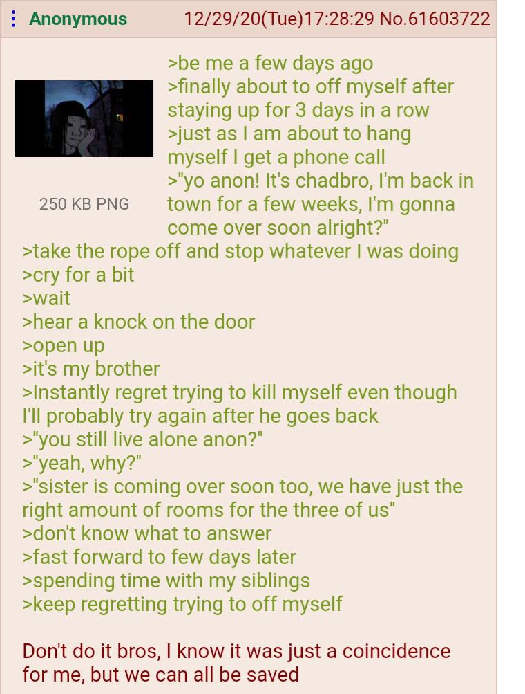
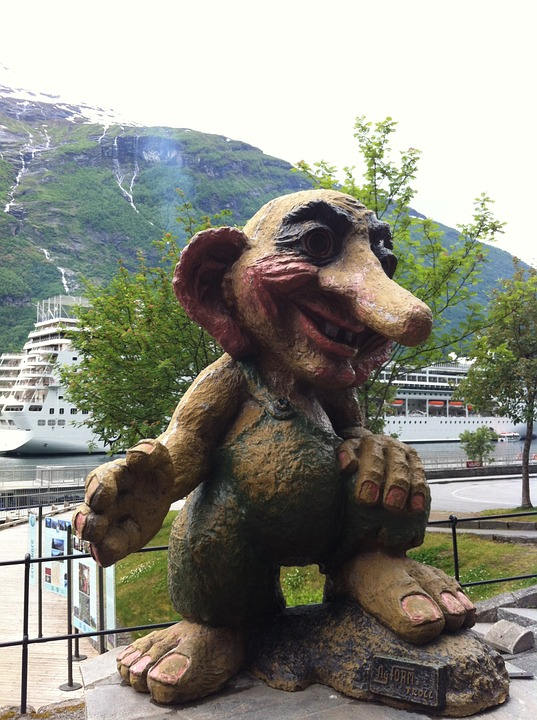

Un forum pe internet, este un site de discuții online, unde oamenii pot purta conversații sub forma mesajelor postate. Acestea diferă de camerele de chat prin faptul că mesajele sunt adesea mai lungi decât un rând de text și sunt cel puțin temporar arhivate. De asemenea, în funcție de nivelul de acces al unui utilizator sau de configurarea forumului, este posibil ca un mesaj postat să fie aprobat de un moderator înainte ca acesta să devină vizibil public.
Forumurile au un set specific de jargon asociat; exemplu: o singură conversație se numește "thread" sau subiect.
Un forum de discuții are o structură ierarhică sau de arbore: un forum poate conține un număr de subforumuri, fiecare dintre acestea putând avea mai multe subiecte. În cadrul subiectului unui forum, fiecare nouă discuție inițiată se numește un "thread" și poate fi răspunsă de cât de mulți oameni doresc.
În funcție de setările forumului, utilizatorii pot fi anonimi sau trebuie să se înregistreze la forum și apoi să se conecteze ulterior pentru a posta mesaje.
Primele forumuri de internet ar putea fi descrise ca o versiune web a unei liste de corespondență electronică sau a unui grup de știri, permițând oamenilor să posteze mesaje și să comenteze alte mesaje. Dezvoltările ulterioare au imitat diferitele grupuri de știri sau liste individuale.
Forumurile pe internet sunt răspândite în mai multe țări dezvoltate. Japonia postează cel mai mult cu peste două milioane pe zi pe cel mai mare forum, 2channel. China are, de asemenea, multe milioane de postări pe forumuri.
Forumurile îndeplinesc o funcție similară cu cea a sistemelor de panouri de afișare dial-up și a rețelelor Usenet care au fost create pentru prima dată începând cu sfârșitul anilor 1970. Primele forumuri bazate pe web datează din 1994, cu proiectul WIT și începând din acest moment, au fost create multe alternative. Un sentiment de comunitate virtuală se dezvoltă adesea în jurul forumurilor care au utilizatori obișnuiți. Tehnologia, jocurile video, sportul, muzica, moda, religia și politica sunt domenii populare pentru temele forumului, dar există forumuri pentru un număr mare de subiecte. Argoul de internet și prelucrarea de imagini populare pe internet sunt abundente și utilizate pe scară largă în forumurile de pe Internet.
Trolli
Trollii din forum sunt utilizatori care încalcă în mod repetat și deliberat neticheta unei comunități online stabilite, postând mesaje inflamatorii, străine sau în afara subiectului pentru a atrage sau a entuzia utilizatorii să răspundă sau să testeze regulile și politicile forumului și, cu aceasta, răbdarea personalul forumului. Comportamentul lor provocator poate declanșa războaie cu flăcări (a se vedea mai jos) sau alte tulburări. Răspunsul la provocările unui troll este cunoscut ca „feeding the troll”(sa hranesti trollul) și este, în general, descurajat, deoarece poate încuraja comportamentul lor perturbator.
Când un thread - sau, în unele cazuri, un întreg forum - devine instabil, rezultatul este de obicei spam necontrolat, macro-uri de imagine sau abuz de sistem de raportare. Când discuția devine aprinsă și părțile nu fac altceva decât să se plângă și să nu-și accepte reciproc diferențele de punct de vedere, discuția degenerează în ceea ce se numește un război de tastatură. A aprinde pe cineva înseamnă a ieși din subiect și a ataca persoana, mai degrabă decât părerea sa. Candidații probabili pentru războaiele de tastatură sunt de obicei teme religioase și socio-politice sau subiecte care discută despre rivalitățile preexistente în afara forumului (de exemplu, rivalitatea dintre jocuri, sisteme de consolă, producătorii de mașini, naționalități etc.)